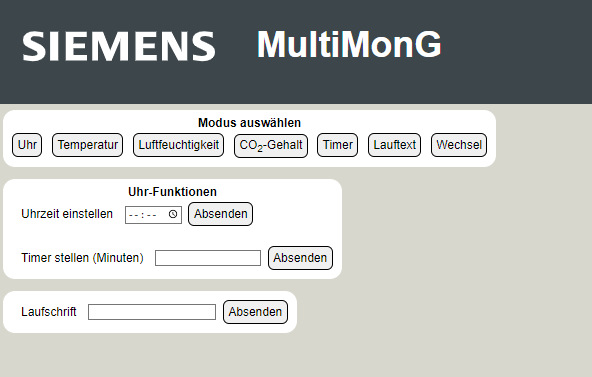

Bedienung des MultiMonG
Wurde das Programm "MultiMonG" auf das Gadget geladen, zeigt es zunächst 00:00 als aktuelle Uhrzeit an. Mit dem rechten Taster am Gerät kann zwischen den verschiedenen Modi (Uhr, Temperatur, Luftfeuchte, CO2-Gehalt, Timer, Laufschrift, zyklischer Wechsel) gewechselt werden. Der Timer kann mit dem linken Taster gestartet werden.
Weitere Bedienfunktionen können über das WLAN-Netzwerk des Gadgets erreicht werden. Dazu verbindet man sich über ein anderes Gerät mit dem WLAN-Netzwerk, das die im Programm eingestellten Zugangsdaten hat. Die meisten Geräte leiten nun automatisch auf die "Anmeldeseite des Netzwerks" weiter, andernfalls kann das Gadget erreicht werden, indem man die IP-Adresse 192.168.4.1 in die Adresszeile eines Browsers eingibt. Es erscheint die folgende Homepage:
Durch die Buttons im oberen Teil der Website lässt sich direkt der Modus des Gadgets einstellen. Im Block darunter kann die aktuelle Uhrzeit eingestellt werden sowie die Zeit des Timers. Ganz unten kann ein eigener Text eingestellt werden, der als Laufschrift angezeigt wird.